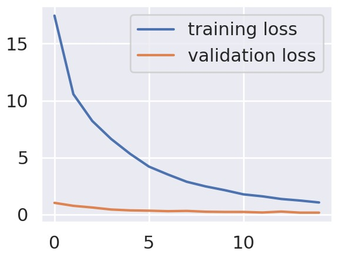
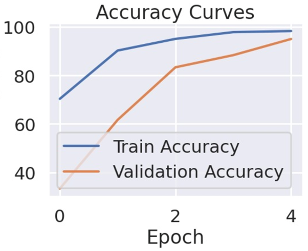

Egypt relies heavily on agriculture as a key sector supporting its economy and food security, with a large portion of the population engaged in farming activities. The aim of this project is to develop a machine learning algorithm using deep learning architectures that can accurately recognize and classify diseases affecting apple leaves to help support farmers by enabling early detection, reducing crop losses.
This dataset contains 1530 images of apple tree leaves. Moreover, the data is labeled under 3 different labels: Healthy, Powdery, and Rust. It is already split into training, testing, and validation subsets. The class distributions are:
| Subset | Healthy | Powdery | Rust |
|---|---|---|---|
| Training | 458 | 430 | 434 |
| Testing | 50 | 50 | 50 |
| Validation | 20 | 20 | 20 |
Below are a few examples showing the input images and their corresponding classifications:
Classification: Healthy
Classification: Powdery
Classification: Rust
Below are some state-of-the-art models used for plant disease detection along with their test accuracies:
We started with our baseline model (see the image below) which started with a very simple CNN architecture. We ran and tested this model on our data and it achieved an accuracy of 86.67%.
We explored a deeper CNN architecture to improve performance, where we added more layers and deepened the model which achieved an accuracy of 91.67%. Then we implemented a GPU-powered CNN, enabling faster training times and improved experimentation with larger datasets and deeper models, which contained This is a convolutional neural network (CNN) with 11 layers (including padding, convolutional, batch normalization, ReLU, max pooling, flattening, and fully connected layers), designed for 3-class image classification with an input of 3-channel images which was larger than the previous models. This model got an accuracy of 95.5% and a very respectable performance in respect to its training and validation accuracy over the epochs (see picture below). Yet, ultimately we decided to explore a different architecture as this model was too simple.
We decided that the CNN models being used were too trivial and basic and hence decided to revisit the literature review and explore more complex models to use. The next sections will show what models we used, the hyperparameter tuning of the models (if any), and the updates we did to our preproccessing steps. The state-of-the-art included a model called YOLO which we attempted but were unsuccessful because the yolo model requires a very specific structure for its input data and due to the time constraint we could not implement.
This LSTM-based model architecture is designed to handle sequential data by reshaping the input images into a format suitable for LSTM layers. The model consists of three stacked LSTM layers with 128 units each, which are effective for capturing temporal dependencies and spatial relationships in image sequences. The fully connected layers, along with the dropout regularization, help to prevent overfitting, while the output layer with a softmax activation is used to classify the input into three categories making it suitable for our plant disease classification task. The model architecture is summarized in the picture below and it got and accuracy of 66.64%. Furthermore, the same model was run over 50 epochs utlizing GPU and achieved an accuracy of 84.37% but was still not sufficient enough to be in consideration for a final model.
This RNN-based model architecture is designed to process sequential data by reshaping the input images to fit the requirements of the RNN layers. It consists of three stacked SimpleRNN layers with 128 units each, which helps capture temporal dependencies in image sequences. The fully connected layers, combined with dropout regularization, prevent overfitting, while the output layer with a softmax activation ensures the classification of images into three categories. This architecture is well-suited for classifying plant diseases based on sequential features in images. The model architecture is summarized in the picture below and it got and accuracy of 60.11 % which is very low and hence dropped from consideration when choosing a final model.
Key Components of ResNet-34
The architecture starts with an initial convolutional layer with a 7x7 kernel size and a stride of 2. This layer is followed by batch normalization and a max-pooling layer, which serves to reduce the spatial resolution of the input image and extract the first set of low-level features.
These stages use filter sizes of 64, 128, 256, and 512, enabling the model to learn more abstract representations of the input image as it passes through the network. Each residual block within these stages contains two convolutional layers, followed by batch normalization, ReLU activations, and the crucial skip connection.
Our implementation of the ResNet-34 model achieved an accuracy of 95%, which is a very promising result. However, as shown below, the model appears to be overfitting, which is indicated by the gap between training and validation performance.
Model Architecture
The architecture of InceptionV3 begins with a base model that has been pre-trained on ImageNet, but with the top layer removed. This is achieved by setting include_top=False, ensuring the model outputs feature maps rather than final class predictions. These feature maps contain rich representations of the input image, capturing complex patterns that can be adapted for the new task of plant disease detection. The images are resized to (256, 256, 3) to match the input requirements of InceptionV3.
Fine-tuning the Model
To tailor the model for plant disease detection, we unfreeze the top layers of the base InceptionV3 model, allowing them to be trainable. Specifically, the top 30 layers are made trainable, while the earlier layers remain frozen. This approach helps retain the knowledge learned from ImageNet, particularly the low-level visual features captured by the early layers. By freezing the early layers, we avoid overfitting and speed up training, as fewer parameters need to be updated.
Additional Layers
After the base model, a Global Average Pooling layer is added. This layer reduces the spatial dimensions of the feature maps, transforming them into a fixed-length feature vector. This operation not only reduces the number of parameters but also ensures that the model retains the most significant information from the feature maps. The feature vector is then passed through a fully connected Dense Layer with 1024 units and ReLU activation. To prevent overfitting, a Dropout Layer is included, with a rate of 0.6, randomly dropping some units during training to improve the model’s generalization ability. The final layer of the model is a Softmax Output Layer with 3 units, corresponding to the three classes in the plant disease detection task.
Training and Fine-tuning
Fine-tuning is done by using a low learning rate of 1e-4, allowing the model to make small adjustments to the pre-trained weights. This ensures that the previously learned features are preserved while still adapting to the new task. The model is compiled using the Adam Optimizer with categorical cross-entropy as the loss function, which is ideal for multi-class classification problems. In addition, precision and recall metrics are used to monitor the model's performance, focusing on both false positives and false negatives.
Callbacks and Regularization
To improve training efficiency and prevent overfitting, we use two important callbacks:
1. Early Stopping: This callback stops training when the validation loss has not improved for 10 consecutive epochs and restores the best weights from earlier in the training process.
2. Reduce Learning Rate: This callback reduces the learning rate by a factor of 0.2 when the validation loss plateaus, allowing the model to converge more quickly during the later stages of training.
The fine-tuned InceptionV3 model achieved outstanding results, reaching a top validation accuracy of 98.3%, surpassing the performance of other state-of-the-art models tested. Yet, it is important to note that the InceptionV3 model extremely underfits and hence even though it reached an extremely high accuracy, it would not be robust to unseen data.
Rescaling of Images
The images are rescaled by dividing each pixel value by 255, which normalizes the pixel intensity values to the range [0, 1]. This helps improve the convergence speed of gradient-based optimization algorithms like stochastic gradient descent (SGD). The rescaling ensures consistency across both the training and validation datasets.
Data Augmentation
Data augmentation is applied to artificially expand the size of the training dataset by generating transformed versions of the original images. This increases the robustness of the model by exposing it to a broader variety of data. The following augmentation techniques are used:
| Technique | Description |
|---|---|
| Rotation Range (30 degrees) | Images are randomly rotated within a 30-degree range to simulate various object orientations. |
| Width & Height Shifts (0.2) | The images are shifted horizontally and vertically by up to 20% of the total image width/height. |
| Shear Range (0.2) | Shearing transformations are applied, simulating perspective changes by slanting the images. |
| Zoom Range (0.2) | Random zooming is applied to simulate changes in focal length and object distance. |
| Horizontal Flip | Images are flipped horizontally to simulate different orientations. |
| Fill Mode | The fill_mode='nearest' ensures that empty pixels after transformations are filled with the nearest valid pixel value. |
These transformations are applied using the ImageDataGenerator class from the tensorflow.keras.preprocessing.image module. The augmented data helps improve model generalization and avoids overfitting.
We combined the augmented data with the original dataset and observed improved performance in model robustness. These preprocessing steps were critical in enabling our best models to achieve higher accuracy and better generalization. Furthermore, we optimized the hyperparameters of our models by decreasing the learning rate, adding dropout regularization and adam optimizers.
Our best performing models were the GPU-powered CNN and the ResNet-34, yet the accuracy and loss are not the only measures that need to be highlighted when choosing a final model to deploy. Firstly, let's compare the final results of both the CNN and ResNet-34 models after all said improvements.
| CNN | ResNet-34 | |
|---|---|---|
| Before Updates |  | |
| After Updates |
Accuracy: 95.5% |
Accuracy: 96.6%  |
| Advantages | Simpler architecture, faster training | Higher accuracy, robust feature extraction |
| Disadvantages | Lower generalization, limited scalability | More computational resources required |
As can be observed in the graphs in the previous section, the InceptionV3 model was extremely underfitting, yet the CNN and the ResNet-34 were a little bit overfitting, but we were able to improve their performance and reduce the overfitting. Hence, our best performing model was in fact the GPU powered CNN, even though it holds the simplest architecture, it is the most efficient in terms of balancing time complexity and accuracy. Which is why we decided it to be our final model.